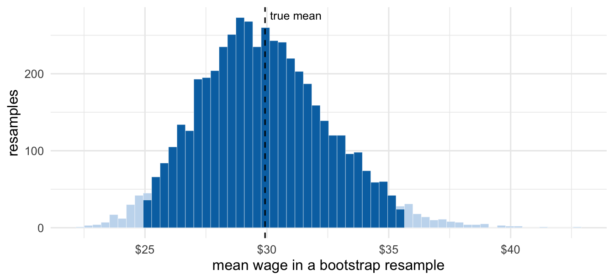
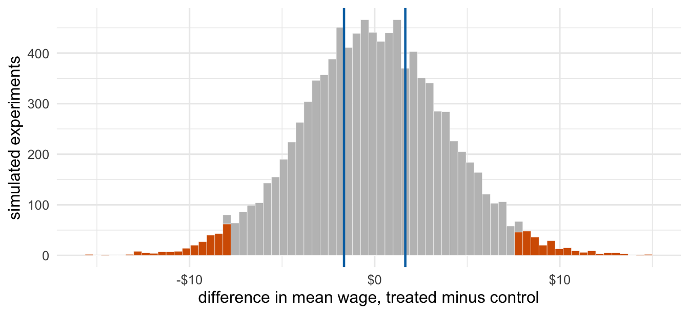

x <- sample(pop, n)
boot_means <- replicate(5000, mean(sample(x, replace = TRUE)))
ci <- quantile(boot_means, c(0.025, 0.975))What a confidence interval promises
Bootstrap intervals, coverage and p-values, built from simulation and one population of wages
statistics
simulation
interactive
Resample one sample to get a confidence interval, repeat the whole experiment a thousand times to see what the 95 percent means, then build a null distribution to see what a p-value measures.
We almost never see a population, only a sample from it. Every average computed from a sample would have come out differently with a different sample, and statistical inference is the business of saying how differently.
The question: when we compute an average from one sample, how much should we trust it, and how large must a difference be before we call it real?
Simulation answers both by doing what theory only describes: drawing the sample again and again. The population here is a million hourly wages, skewed right like real wages, with a true mean of $29.93. Figure 1 builds one confidence interval, the first interactive chart repeats that a few hundred times to show what “95 percent” means, Figure 2 builds a null distribution for a hypothesis test, and the second interactive chart shows how sample size decides whether a real effect gets detected.
A bootstrap interval from one sample
Draw 50 workers. The bootstrap treats that sample as a stand-in for the population: draw 50 from it with replacement, compute the mean, and repeat 5,000 times. The spread of those means estimates how much the sample mean would vary across real samples.

The sample mean is $29.89 and the 95 percent interval runs from $25.00 to $35.59. It happens to contain the true mean. The question is how often that happens.
What “95 percent” means
The 95 percent is a property of the procedure, not of any one interval: draw a sample, build the interval, and the interval contains the truth in about 95 percent of repetitions. Here is the whole procedure repeated a thousand times:
covers <- replicate(1000, {
s <- sample(pop, n)
b <- rowMeans(matrix(sample(s, n * 1000, replace = TRUE), nrow = 1000))
q <- quantile(b, c(0.025, 0.975))
q[1] <= mu & mu <= q[2]
})93.8 percent of the intervals contain the true mean, a little short of 95. The chart below runs the same experiment in your browser. Each vertical line is one sample’s interval; orange ones miss. Lower the sample size and the miss rate climbs well past 5 percent, because with skewed data a small sample rarely includes the few high earners that pull the mean up, so the bootstrap distribution is too narrow. The promise is only approximately kept, and only once samples are large.
A hypothesis test from a null distribution
Now a policy question. A job-training program is tested on 50 workers, compared with 50 who did not take it. In this simulation the program genuinely raises wages by $2 an hour. The null hypothesis is that it does nothing.
If the null were true, both groups would be drawn from the same population, so we can simulate exactly what the difference in means looks like when nothing is going on, 10,000 times. (With real data, where the population is unknown, shuffling the treatment labels builds the same distribution from the sample alone.)
control <- sample(pop, n)
treated <- sample(pop, n) + 2
observed <- mean(treated) - mean(control)
null_diffs <- replicate(10000, mean(sample(pop, n)) - mean(sample(pop, n)))
crit <- quantile(null_diffs, c(0.025, 0.975))
p_value <- mean(abs(null_diffs) >= abs(observed))
The rejection region is everything beyond -$7.88 and $7.70: differences that would arise less than 5 percent of the time if the program did nothing. The observed difference is $1.66. A difference at least that large, in either direction, shows up in 67 percent of no-effect experiments, so the p-value is 0.67 and the test does not reject.
That is the right reading of a p-value: how surprising the data would be if the null were true. It is not the probability that the null is true, and here the null is in fact false. The test simply has too little data to see a $2 effect against wages this dispersed.
How much data a real effect needs
Change the true effect, the sample size per group, or the significance level. The grey bars are the null distribution, the red lines its rejection boundaries, the blue outline 1,000 studies run with the true effect, and the black line the one study drawn this time.
With the true $2 effect, power is under 10 percent at 50 workers per group. Push the sample size to about 1,500 and it reaches roughly 80 percent; set the effect to zero and the test rejects about as often as the significance level, which is what the level means.
What the four charts show together
Figure 1 and the first interactive chart are two views of one idea: an interval describes how much an estimate moves from sample to sample, and its “95 percent” is a long-run hit rate that small samples from skewed populations fall short of. Figure 2 and the second chart apply the same idea to testing: the null distribution shows how much a difference moves when nothing is going on, the rejection region and p-value are read off it, and whether a real effect clears that bar depends mostly on how much data there is. In both cases the quantity that matters is the spread of an estimate across hypothetical samples, and simulation makes that spread something you can see.